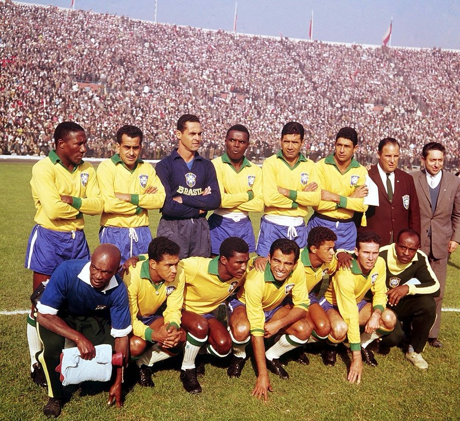
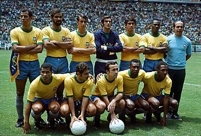
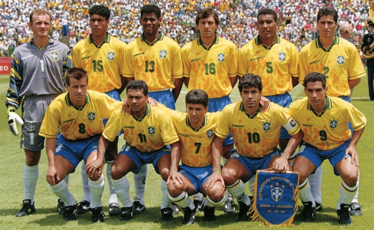

Disputada na Suécia, esta Copa marcou o primeiro título mundial do Brasil e espantou de vez o fantasma do "Maracanazo" de 1950. Sob o comando de Vicente Feola, a Seleção apresentou ao mundo um garoto de apenas 17 anos chamado Pelé, além do genial Garrincha. Após superar a soberba dos europeus e aplicar uma goleada de 5 a 2 na final contra os donos da casa, o Brasil levantou a taça Jules Rimet pela primeira vez.

No Chile, o Brasil defendia o título e enfrentou um drama logo no início: Pelé se lesionou gravemente no segundo jogo da fase de grupos e ficou de fora do restante do torneio. Foi aí que brilhou a estrela de Garrincha, que assumiu a responsabilidade e fez uma Copa avassaladora. Com o reforço de Amarildo substituindo o futuro Rei, Pelé, a Seleção bateu a Tchecoslováquia por 3 a 1 na grande final, garantindo o bicampeonato consecutivo.

No México, o Brasil montou aquela que é considerada por muitos especialistas como a maior seleção de futebol de todos os tempos. Comandada por Mário Zagallo, a equipe contava com um quinteto de camisas 10 genial: Pelé, Tostão, Rivellino, Gérson e Jairzinho (o "Furacão da Copa", que marcou gols em todos os jogos). O Brasil venceu todas as partidas da competição, esmagou a Itália por 4 a 1 na final e conquistou a posse definitiva da Taça Jules Rimet.

Após um jejum incômodo de 24 anos sem títulos mundiais, o Brasil chegou aos Estados Unidos sob forte desconfiança. Adotando um estilo de jogo mais pragmático e defensivo, montado pelo técnico Carlos Alberto Parreira, a Seleção dependeu do brilhantismo e da genialidade da dupla de ataque formada por Romário e Bebeto. A final contra a Itália foi tensa e terminou em 0 a 0 no tempo normal e na prorrogação. Pela primeira vez na história, uma Copa foi decidida nos pênaltis, sacramentada pelo famoso chute para fora do italiano Roberto Baggio.

Na primeira Copa realizada na Ásia (Coreia do Sul e Japão), a "Família Scolari", liderada pelo técnico Luiz Felipe Scolari, calou os críticos com uma campanha impecável de 7 vitórias em 7 jogos. O grande herói da conquista foi Ronaldo Fenômeno, que vinha de graves lesões nos joelhos e deu a volta por cima tornando-se o artilheiro do torneio. Ao lado de Rivaldo e Ronaldinho Gaúcho (os "Três Rs"), Ronaldo marcou os dois gols na final contra a Alemanha (2 a 0), garantindo o inédito pentacampeonato.

E agora cá estamos, em 2026, 24 anos depois do pentacampeonato e em um jejum dos mesmos 24 anos que se passaram entre o tricampeonato e o tetracampeonato. Neymar é o principal jogador da seleção e, mesmo machucado, sentimos o impacto dele em campo: influenciando o estilo de jogo dos companheiros. Sabemos que o caminho até a final é muito difícil, podemos encarar o Japão ou a Holanda logo na etapa dos 16 avos de final. Na semifinal possivelmente a seleção francesa será nossa adversária, apenas para na final podermos nos encontrar com a melhor seleção da Argentina da história. Mas a frase que mais representa os brasileiros é: "O brasileiro não desiste nunca"!